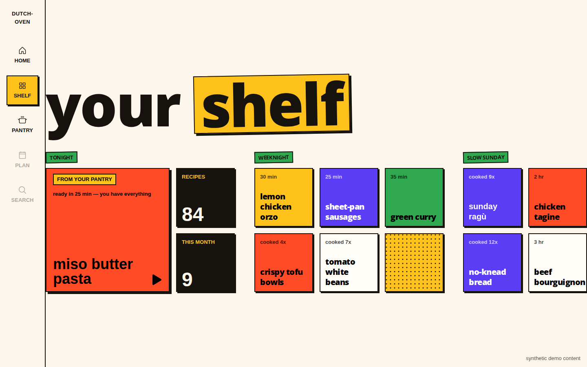
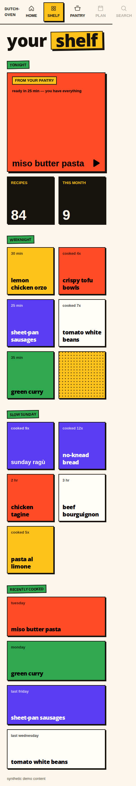

From fixed-group prototype to the real, DB-backed dashboard. Groups
become your collections, in your order.
Recently cooked and meal logging are deferred — they ship when
meal_logs lands later.


Explicitly out: cooking-in-progress state (deferred by you), social/discovery feeds, nutrition dashboards, any fixed taxonomy, data-entry forms on this surface.
empty / first-run Zero recipes → one oversized tomato invitation tile. No fake content, no ghost groups.
established shelf Headline shrinks, user's collections take over. Overflow collapses to "N more →" group view.
meal_logs —
the bottom row ships when logging lands.
| State | Trigger | Behavior |
|---|---|---|
| empty | 0 recipes (new user) | Shelf area = one oversized "save your first recipe" tile + rail. Must not depend on import-from-URL existing. |
| typical | 20–80 recipes, 3–8 collections | Panorama composition as prototyped; all collection tiles visible. |
| overflow | 200+ recipes, long names | Collections show a capped tile count with "see all" into a group view; names truncate without breaking the grid. |
Current DB is template-only (auth + a placeholder
items table).
Two new tables now, two deferred. The relationships in plain
English:
userId.
collectionId column.
collectionId, no data loss.
recipes
| id | text | pk |
| userId | text | → user |
| title | text | |
| imageUrl | text, nullable | tile photo |
| collectionId | text, nullable | → collections |
| createdAt | timestamp |
One row per saved recipe. imageUrl nullable → flat
color tiles are the fallback. collectionId nullable →
ungrouped recipes sit loose on the shelf.
collections
| id | text | pk |
| userId | text | → user |
| name | text | |
| position | int | shelf order |
One row per shelf group you create. position stores
your ordering.
recipe_collections later
| recipeId | text | → recipes |
| collectionId | text | → collections |
Deferred. The membership list for multi-group recipes.
First build: one group per recipe via
recipes.collectionId.
meal_logs later
| id | text | pk |
| userId | text | → user |
| recipeId | text | → recipes |
| cookedAt | timestamp | sort key |
Deferred. One row per cooked meal would power "recently cooked" as newest-first. Not in the first build — clean append later.
Manual add now, import-ready. The add flow (title + pick collections) is structured so a URL-import field drops in later without redesign. Import-from-URL stays a separate, later shape.
Photo with flat fallback. Real food imagery leads when a
recipe has one; ingredient-color tiles cover the rest. Consequence:
recipes.imageUrl (nullable) is in the data model above.
2 tables — one group per recipe. recipes + collections; a
recipe sits in one group via its collectionId column.
The join table (recipe_collections) and
meal_logs are deferred; both upgrade later without data
loss.
Confirmed by you on 2026-08-14. Next step is the build handoff below.
recipes, collections) +
db:push.
src/routes/(app)/dashboard.tsx on real data:
collections query, tile grid, empty state, overflow collapse.